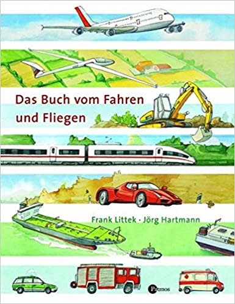

Kinderbücher
Ein gutes Kinderbuch ist immer leicht zu lesen - und nur schwer zu schreiben. Kinder fragen. Und das gnadenlos. Als Autor hat
nur eine Chance, wer den Kern eines Thema wirklich durchdrungen hat - und dieses Wissen dann präzise, auf den Punkt genau -
vermitteln kann.

Wie funktioniert der Motor bei einem Auto? Was erledigen Kettenlader und Löffelbagger auf der Baustelle? Was macht der Mähdrescher auf dem Feld? Das alles und noch mehr über viele verschiedene Fahrzeuge erfährst du in diesem Buch.
Eine kindgerecht aufbereitete Sachgeschichte für alle Fahrzeugfans.

Was ist eigentlich Strom? Wie wird er gewonnen und wie findet er den Weg in unsere Steckdosen? Auf verständliche Art
und Weise bekommen Kinder Antworten auf diese Fragen. Ab 6.

Wie kann ein Segelflugzeug ohne Motor fliegen? Wie viele Container passen auf ein Frachtschiff? Wie schnell fährt ein
ICE? Und woher bekommt der Zug den Strom? Das alles und noch mehr über viele verschiedene Fahrzeuge erfährst du in
diesem Buch. Ein kindgerecht aufbereitetes Sachbilderbuch für kleine Fahrzeugfans.

Ein Standardwerk zum beliebtesten Sport der Welt: Fußball. Brandaktuell und passend zur
EM 2016 erscheint das Arena Fußballbuch jetzt in aktualisierter Ausgabe mit einem Vorwort
von Toni Kroos. Der Band bietet eine umfassende, leicht verständliche Einführung, wichtige
Spielregeln, grundlegende Techniken, Taktik, aktuelle Fotos von Profifußballern - ein Muss
für jeden Fußballfan.

Große Wimmelseiten geben einen Überblick über Fahrzeuge in Aktion - zu Wasser, zu Lande und in der Luft: Da gibt es
Schiffe, Passsagierflugzeuge und Sportflugzeuge, Züge, Lastwagen, Baufahrzeuge, Rettungsfahrzeuge und
Landwirtschaftsmaschinen. Wer umblättert, findet Details und altersgerechte Erklärungen zu jeweils einem bestimmten
Fahrzeug: Was ist das Besondere am Airbus? Wie kommt das Feuerwehr-Löschfahrzeug zm Einsatz? Wie funktioniert der Motor
beim Pkw? Was macht der Mähdrescher auf dem Feld? Wozu ist ein Bagger da? Garantiert ein Lieblingsbuch für kleine
Technikfans!

Wenn es um Fußball geht, macht Lynn, Amira, Sandra und Leonie so schnell keiner was vor. Die vier Fußballmädchen
begleiten durch das Buch und geben viele praktische Tipps zu Training und Taktik. Fußball wird bei Mädchen immer
belieber und in diesem Buch finden Nachwuchskickerinnen alles, was sie über ihren Lieblingssport wissen müssen: richtig
schießen, dribbeln, köpfen wird zum Kinderspiel. Natürlich werden auch unsere Profifußballerinnen und ihr faszinierender
Alltag zwischen Wettbewerben und Pokalen vorgestellt.
In der Stadt und auf dem Land - unter der Erde gibt es viel zu entdecken: Keller und Tresorräume, Leitungen und Rohre,
Tunnel und Tiefgaragen, Maulwürfe und Füchse ... und manchmal sogar alte Schätze! Ein spannender Querschnitt durch die
Erde auf einem 250 cm langem Leporello zum Ausklappen.

Ein Kinderbuch über Geschichte und Gegenwart des Buches (ab 10 J.).